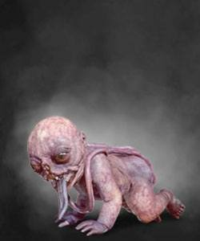

„Říct, že potracenka je ošklivá, je jako říct, že hovno nemá zrovna valnou chuť. V podstatě je to pravda, ale tak nějak to nevystihuje skutečnost v plném rozsahu."
- Lambert, zaklínač ze školy Vlka
| Typ: | Prokletí |
|---|---|
| Oblast | Vranohrad |
| Slabost | Axii, Olej proti prokletým |
| Získané předměty | Nižší červený mutagen, Ucho příšery, Krev příšery, Kost příšery, Mozek příšery |
Potracenky jsou dost možná ta nejodpudivější stvoření, se kterou se může zaklínač potýkat. Byly zrozeny z nechtěných mrtvých dětí, které byly uloženy bez řádného pohřbu. Jejich tělo připomíná plod v částečném rozkladu, které je znetvořeno, strachem, zlostí a nenávistí.
Potracenky se živí krví těhotných žen, neboť je žene hlad, který často končí smrtí jejich obětí.
Při ohrožení se potracenka dokáže proměnit do podoby znetvořeného a shrbeného muže, který se při pohybu opírá o přední končetiny.
Potracenka se však nemusí jen zabíjet, ale jde z ní také strhnout kletba, kterou byla stvořena. Po zlomení takové kletby se potracenka přemění na tzv. strážce krbu, který chrání rodinu, kterou nikdy nepoznal, v domě, který nemohl nikdy nazývat domovem.